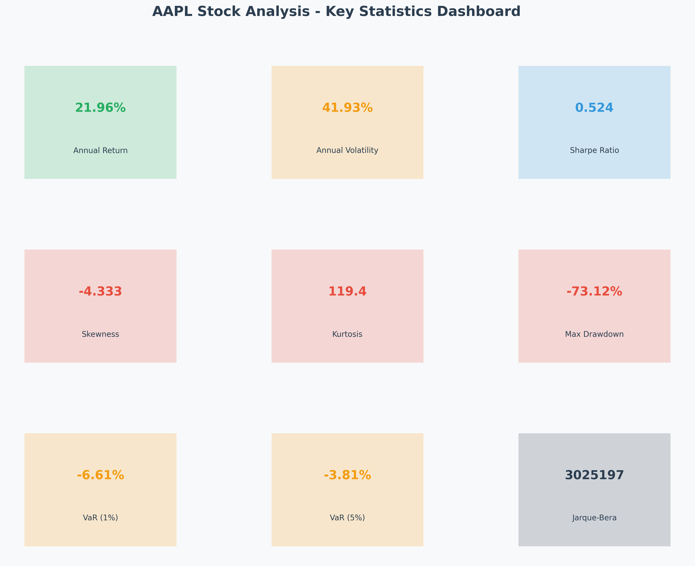
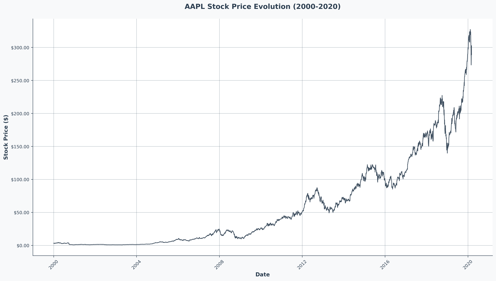
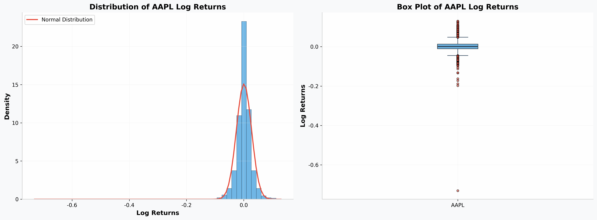
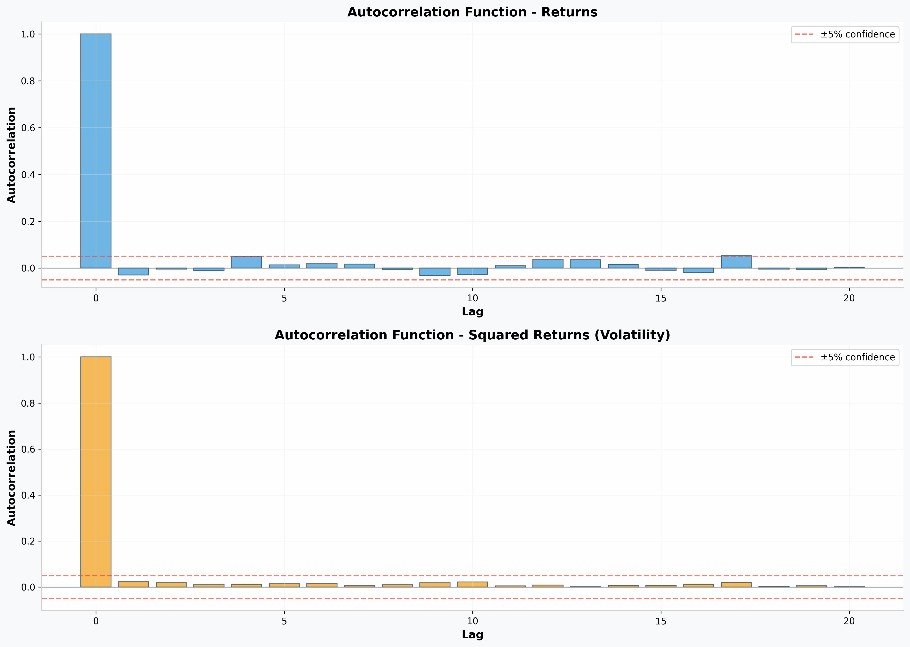
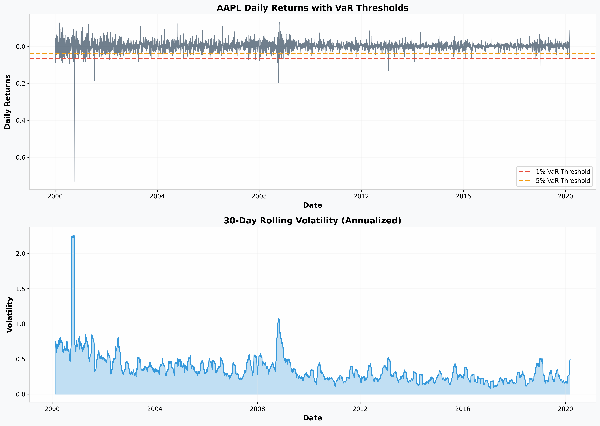

Vue d'Ensemble
Contexte du Projet
Cette analyse examine les données de prix boursiers d'Apple Inc. (AAPL) du 3 janvier 2000 au 6 mars 2020, couvrant plus de 5 000 jours de négociation. L'étude suit un cadre d'évaluation des risques complet conçu pour évaluer la volatilité du marché, les distributions de rendement et les métriques de risque essentielles pour la prise de décision en matière d'investissement.
La période d'analyse capture des événements de marché significatifs incluant la bulle des dot-com, la crise financière de 2008 et le redressement ultérieur, fournissant un ensemble de données robuste pour comprendre le profil de risque d'Apple dans différentes conditions de marché.

Figure 1: Vue d'ensemble complète des métriques de performance et des indicateurs de risque d'AAPL
Méthodologie et Traitement des Données
Source de Données
L'analyse utilise des données de prix boursiers quotidiens du NYSE, du 3 janvier 2000 au 6 mars 2020, totalisant 5 076 jours de négociation. L'intégrité des données a été vérifiée par des méthodes de validation statistique et de détection des valeurs aberrantes.
Calcul des Rendements
Les rendements logarithmiques ont été calculés en utilisant la formule:
où $P(t)$ représente le prix de clôture au temps $t$.
Tests Statistiques
Le test de Jarque-Bera a été employé pour évaluer la normalité des rendements. Les fonctions d'autocorrélation ont été calculées pour les rendements et les rendements au carré afin d'identifier les modèles et l'agglomération de volatilité.
où $S$ est l'asymétrie, $K$ la kurtosis, et $n$ le nombre d'observations.
Métriques de Risque
Les calculs de la Value-at-Risk (VaR) ont été effectués aux niveaux de confiance de 1% et 5%. Les mesures de volatilité mobile ont été calculées en utilisant des fenêtres de 30 jours pour capturer les caractéristiques de risque variables dans le temps.
où $F^{-1}$ est la fonction quantile inverse de la distribution des rendements.
Analyse Complète
Évolution du Prix des Actions

Figure 2: Trajectoire du prix des actions d'AAPL de 2000-2020, montrant une croissance spectaculaire de 3,47$ à plus de 300$ (ajusté pour les divisions)
L'action d'Apple a démontré une croissance exceptionnelle à long terme, augmentant d'environ 8 600% sur la période d'analyse. L'évolution du prix révèle des phases distinctes : volatilité initiale au début des années 2000, croissance régulière dans les années 2000, appréciation accélérée pendant l'ère de l'iPhone (à partir de 2007), et performance remarquable dans les années 2010 alimentée par l'expansion des services et le développement de l'écosystème.
Pour AAPL: $\frac{300 - 3.47}{3.47} \times 100\% \approx 8,600\%$
Caractéristiques de la Distribution des Rendements

Figure 3: Analyse de la distribution révélant des écarts significatifs par rapport à la normalité et des événements extrêmes dans les queues de distribution
Propriétés Statistiques
- Rendement Journalier Moyen: 0.087%
- Écart-Type: 2.64%
- Rendement Annualisé: 21.96%
- Volatilité Annualisée: 41.93%
Forme de la Distribution
- Asymétrie: -4.33 (asymétrie négative)
- Kurtosis: 119.41 (queues lourdes)
- Test de Jarque-Bera: 3,025,197 (p < 0.001)
- Normalité: Rejetée
Interprétation: L'asymétrie négative de -4.33 indique que les rendements extrêmes négatifs sont plus fréquents que prévu par une distribution normale. La kurtosis extrêmement élevée de 119.41 (contre 3 pour une distribution normale) signale la présence de queues de distribution lourdes, indiquant un risque plus élevé d'événements extrêmes.
Agglomération de Volatilité et Autocorrélation

Figure 4: Fonctions d'autocorrélation pour les rendements et les rendements au carré, indiquant des effets d'agglomération de volatilité
où $\rho(k)$ est l'autocorrélation au lag $k$.
L'analyse d'autocorrélation révèle une corrélation sérielle minimale dans les rendements, soutenant l'efficacité du marché. Cependant, les rendements au carré présentent une autocorrélation persistante, indiquant un clustering de volatilité - caractéristique emblématique des séries temporelles financières. Ce modèle suggère que les périodes de forte volatilité tendent à être suivies de périodes de forte volatilité, et les périodes calmes par des périodes calmes, validant le besoin de modèles de risque dynamiques comme GARCH.
Évaluation des Risques et Value-at-Risk

Figure 5: Rendements quotidiens avec seuils VaR et analyse de volatilité mobile
où $\mu_p$ est le rendement du portefeuille, $r_f$ le taux sans risque, et $\sigma_p$ l'écart-type du portefeuille.
L'analyse des risques démontre la volatilité significative d'Apple, avec un VaR journalier à 1% indiquant des pertes potentielles dépassant 6,6% lors des pires journées de négociation. Le graphique de volatilité mobile révèle des périodes de risque élevé, particulièrement pendant les événements de stress du marché. Le ratio de Sharpe de 0.52 suggère des rendements ajustés au risque raisonnables, bien que cela reflète l'environnement de volatilité élevée typique des actions technologiques.
Analyse Statistique Avancée
Test de Normalité de Jarque-Bera
Le test de Jarque-Bera est une méthode statistique pour vérifier si les rendements suivent une distribution normale. Le résultat extrêmement élevé (3,025,197) avec un p-value < 0.001 fournit une preuve statistique irréfutable que les rendements d'AAPL ne suivent pas une distribution normale.
Pour AAPL:
- $n = 5075$ (nombre d'observations)
- $S = -4.33$ (asymétrie)
- $K = 119.41$ (kurtosis)
- $JB = 3,025,197$ (statistique du test)
Analyse de la Volatilité
La volatilité a été analysée en utilisant des fenêtres mobiles de 30 jours pour capturer la nature dynamique du risque. La volatilité annualisée de 41.93% est substantiellement plus élevée que la moyenne du marché (environ 15-20%), reflétant la nature spéculative et le potentiel de croissance élevé d'Apple.
Résultats Clés et Implications
Insights Critiques
- Performance Exceptionnelle à Long Terme: AAPL a délivré des rendements exceptionnels de 21.96% par an, surpassant significativement les benchmarks du marché
- Distribution Non-Normale des Rendements: Les rendements présentent une asymétrie négative significative (-4.33) et une kurtosis extrême (119.41), indiquant des gains fréquents de petite taille et des pertes occasionnelles importantes
- Clustering de Volatilité Confirmé: Les rendements au carré montrent une autocorrélation persistante, validant la présence de clustering de volatilité et l'adéquation des modèles de type GARCH
- Profil de Risque-Récompense Élevé: Avec une volatilité annualisée de 41.93%, AAPL représente un investissement à haut risque nécessitant une gestion sophistiquée des risques
- Preuve d'Efficacité du Marché: L'autocorrélation minimale dans les rendements soutient l'efficacité du marché sous forme faible pour l'action AAPL
- Présence de Risque de Queue: Les queues lourdes de la distribution indiquent une probabilité plus élevée d'événements extrêmes que prévu par la distribution normale
Implications pour les Investisseurs
L'action d'Apple représente une étude de cas convaincante dans l'analyse moderne des risques boursiers. Tout en délivrant des rendements exceptionnels, le profil de risque de l'action exige une considération attentive de la taille des positions, de la diversification et des stratégies de couverture dynamiques. Le clustering de volatilité confirmé suggère que les modèles de risque incorporant une volatilité variable dans le temps (tels que GARCH) seraient plus appropriés que les mesures de risque statiques.
Pour les gestionnaires de portefeuille, l'analyse souligne l'importance de comprendre les caractéristiques de distribution des rendements au-delà des simples métriques moyenne-variance. La présence d'une asymétrie et d'une kurtosis significatives nécessite l'utilisation de mesures de risque plus sophistiquées telles que la Conditional VaR (CVaR) et les scénarios de stress testing.
Recommandations de Gestion des Risques
- Modélisation GARCH: Utiliser des modèles GARCH pour capturer la volatilité variable dans le temps
- Mesures de Risque Avancées: Implémenter CVaR et des mesures de risque de queue
- Stress Testing: Effectuer des tests de résistance réguliers pour évaluer la performance dans des scénarios extrêmes
- Diversification: Maintenir une diversification appropriée compte tenu du profil de risque élevé
- Surveillance Dynamique: Surveiller continuellement la volatilité et ajuster les positions en conséquence
Limites et Perspectives Futures
Limites de l'Étude:
- L'analyse se concentre uniquement sur AAPL et pourrait bénéficier d'une comparaison sectorielle
- Les modèles GARCH et RiskMetrics mentionnés dans le document de projet nécessitent une analyse plus approfondie
- L'impact des événements macroéconomiques n'a pas été explicitement modélisé
Recherches Futures:
- Implémentation et comparaison de modèles GARCH, EGARCH et GJR
- Analyse de la corrélation avec d'autres actions technologiques
- Étude de l'impact des annonces de résultats et des événements corporatifs
- Développement de stratégies de couverture basées sur les résultats de l'analyse
Données et Ressources
Accédez à l'ensemble complet de données et fichiers d'analyse pour des recherches et validations ultérieures.
Télécharger les Données d'Analyse (CSV) Télécharger les Données Brutes (CSV)